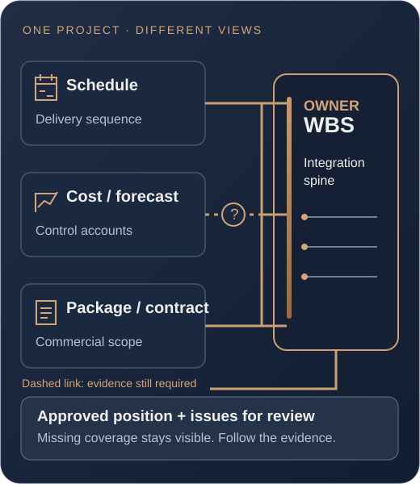
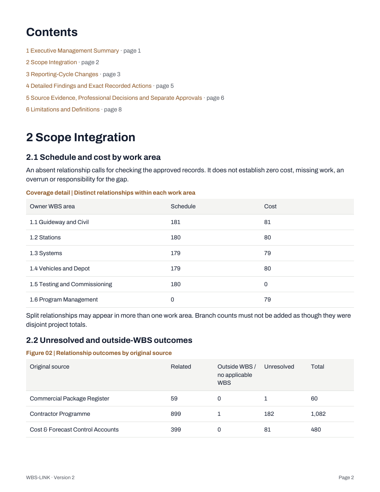
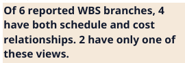
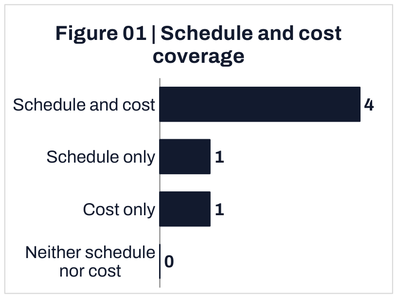
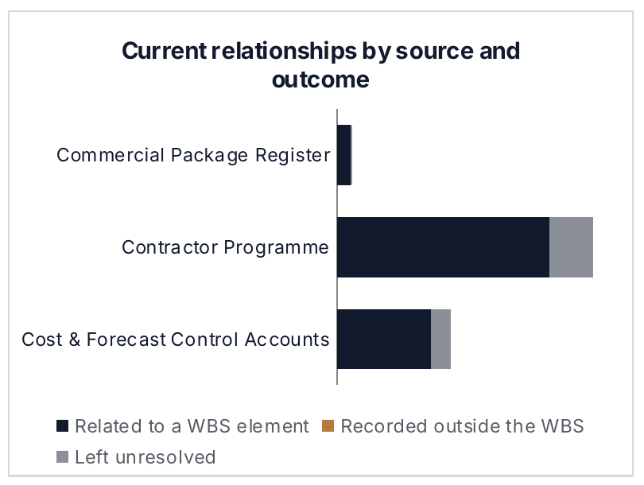
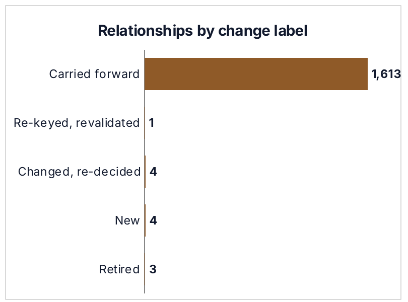
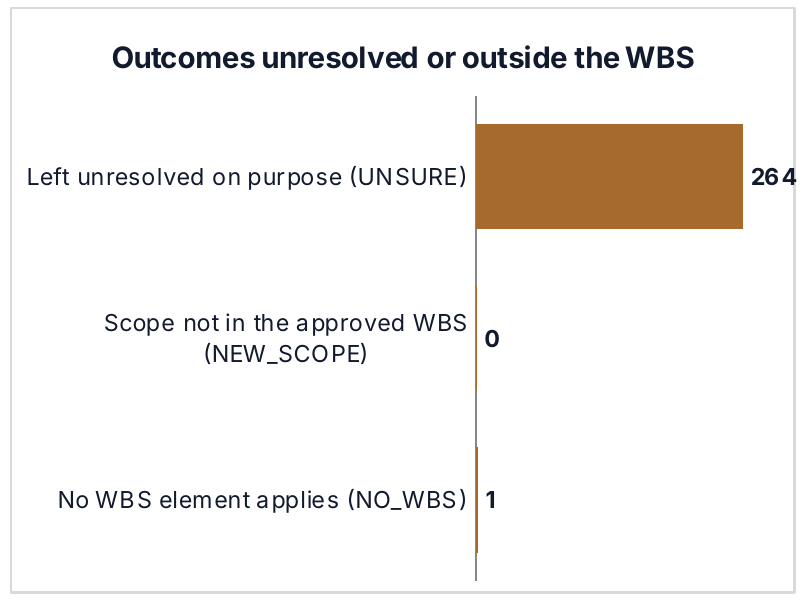

Source records
Original structures remain visible.
PROJECT CONTROLS THROUGH THE OWNER WBS
The schedule, cost forecast and contract register may each be sound. But they do not necessarily describe the same scope. Owners need to see where those views agree and where they do not.
Private-alpha guided evaluation. In the synthetic example, review WBS 1.5 Testing and Commissioning: inspect the source assertion, interpretation and professional decision, then return in Cycle 2.
Synthetic demonstration. Professional decisions remain with your team.

HARBOURLINK · APPROVED POSITION
A synthetic approved project position, with management questions and the evidence behind them.


FOUR CHARTS · PROFESSIONAL EVIDENCE
Coverage, current relationships, cycle movement and unresolved outcomes. Each chart keeps its own population and denominator.




Shown using the fictional HarbourLink practice project, not client project data.
VIDEO 1 · THE CHALLENGE
See how different reporting structures complicate a single view of project delivery.
Sound starts after you choose Play with sound. Captions remain available in the player.
THE INTEGRATION SPINE
Schedule, cost and contract records are reviewed against the Owner WBS without replacing the original files.
Original structures remain visible.
Unproven links remain open.
Your team reviews and approves.
Keep what still holds.
WHY THIS IS DIFFERENT
Scheduling, cost and contract systems retain authority for their own data.
Useful for analysis and joins. Relationships, uncertainty and changes still need governance.
Useful for exploring data. WBS↔LINK retains the evidence and reviewed relationships into the next cycle.
Useful where stable. Revisions still require evidence-based revalidation.
VIDEO 2 · HOW WBS↔LINK WORKS
Follow the files through source review, professional decisions, approval, reporting and the next cycle.
Sound starts after you choose Play with sound. Captions remain available in the player.
THE NEXT REPORTING CYCLE
When revised source files arrive, supported relationships can carry forward. Changed evidence comes back for review.
The review remains traceable from one reporting cycle to the next.

STANDARD FIRST-RUN EXPERIENCE
HarbourLink is a fictional infrastructure project with an Owner WBS, contractor schedule, cost forecast and package register for two reporting cycles.
Review Cycle 1, then load Cycle 2 to see which decisions still hold and which require attention.
Blind package only. No answers, scoring keys, hidden truth or oracle material are included.
PRIVATE PRODUCT OWNER PREVIEW
Use the HarbourLink files in the isolated application to review relationships, approve the project position and explore the workbook, briefing and next reporting cycle.
Existing private preview entry
Isolated evaluation environment, not a production or confidential-data service. Use synthetic practice data only; do not upload real project, employer or client information.
CONTROLLED PRIVATE DEMONSTRATION
We can discuss a private demonstration or controlled pilot path. Do not send confidential, client or employer project files through this public site.
Request a private demonstrationCOMMUNITY / BENCHMARK / RESEARCH
The benchmark remains available for practitioners who want to test their own method. It is a community research surface, not the definition of the product.
START WITH PROOF